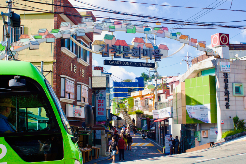
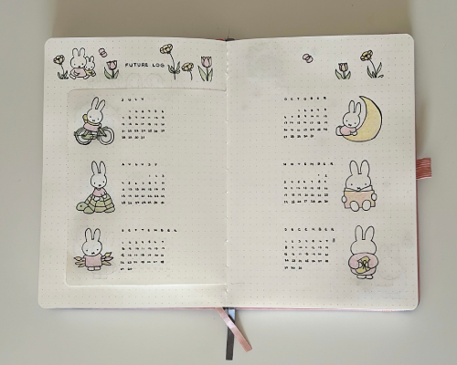

The article “Game Design UX Best Practices” talks about the best practices to improve game monetization, retention, and UX. The author talks about taking UI positions into consideration so that elements that you want the user to click are more readily available for them to press, rather than having to reach across the screen. Sliders are also said to be a great way to store extra content without having to navigate away from the screen, but making sure that when this page opens, the user is able to see partly visible items and an animation from the point of launch and when it closes. For pop-ups that you would like your users to read, the author recommends using a close button rather than an X, and a dim background so that users know if they touch it they can exit to the screen they were in before. The article also highlights how it is important to put decisions that are good for your game on the right side so that users are more willing to click it.
In general, these best practices come from a large accumulation of data, however, should not be seen as strict rules for the game industry. The author highlights how these practices should mainly just help readers adapt their projects and form a strong foundation for success.
JOURNAL 4:
VISUAL THINKING ANALYSIS
⟡ᝰ⋆˙
I consider this image to be interesting because it shows a normal day like any other but in a different part of the world. I think it is obvious that this image is based in South Korea judging by the characters, but I don't think it is obvious what part of the country or the reasoning behind the image. Since my topic is a travel journal that tells you exactly where you can find a specific attraction in South Korea, this image will show up for the user to use as a reference of what this place looks like. This image simply shows my journey as I explored South Korea so that users are able to get a better idea of where to go if they also visit this country for the first time.

Image by Guadalupe Alvarez, 2023
Since the image Sally shared has a calendar, I would assume that this is a picture of a journal of sorts. I enjoyed how gentle the colors of the journal were, and also the grid and shape system it has. It was nicely spaced out making it have a minimalistic feel. I also really enjoyed the bunnies and their different activities. The most obvious aspect of this image is probably that there is a clear calendar on display judging by the numbers and the months labeled. The most mysterious part of this image for me is the purpose of the bunnies, and whether they are for pure decoration or if they indicate something like the goal of the month for the journal owner.

Image by Sally Lee, 2024
JOURNAL 3:
VISUAL THINKING STRATEGIES RESEARCH
⟡ᝰ⋆˙
The article “10 Intriguing Photographs to Teach Close Reading and Visual Thinking Skills” tries to teach readers how to inspire critical thinking when analyzing visual imagery. It highlights how nowadays people are often quick to skim over visuals without noticing many details, making connections with the stories, or asking questions. Therefore, this article suggests that we be detectives and look closely at images as if it were a game and practice doing it regularly so our brain gets accustomed to looking deeper. It also suggests that we ask questions and build on other assumptions as well by communicating introducing each other’s new ideas, and simply experimenting with new ways to look at visuals a little closer.
The website Casa di Solare is a very interesting website that guides the user through that typeface, bringing ideas on how it can be used, and also explaining a specific theme for this font. I was honestly amazed by the amount of user interaction capable on this website, and it is almost as if one gets immersed into this world where you can imagine yourself using this font, inspiring you to use their aesthetic exactly in the way they intended you to. Anyone who accesses this website is bound to be visually inspired.
JOURNAL 2:
BEST PRACTICES FOR MODALS / OVERLAYS / DIALOG WINDOWS
⟡ᝰ⋆˙
Modal Windows was first created as a solution for UI problems since it simplifies them and saves screen real estate. However, they have now become a dreaded popup window that can be considered annoying and automatically prompts immediate dismissal.
Despite being annoying and potentially interrupting users' tasks, hindering their completion of the forms being asked of them, these modal windows are still essential and will continue to be used for grabbing users' attention, user input, and showing additional info/context.
This is why we as designers have the duty to make effective overlays that do not disrupt a user's experience while completing their forms. This article highlights some ways in which this can be achieved, such as having accessible escape hatches, having descriptive titles (giving users a sense of where they are), having buttons that are labeled, actionable, and direct, having proper sizing and location within the page, redirecting focus (so a user knows the difference between this pop-up and the page they were in before), and having these modals be user-initiated (since they are more likely not to like this type of surprise).
JOURNAL 1:
BEST PRACTICES FOR FORM DESIGN
⟡ᝰ⋆˙
While learning about the best practices for form design, i realized that ultimately, the main goal was to facilitate conversion when users attempt to use an app of a website. This can be done by designers when they are able to successfuly create a form that is easy to understand, straightforward, and easy for the users to complete. There were multiple key practices that were highlighted in the artcile such as minimizing input fields, having one column layouts, having specific steps that guide a user succesfuly to compleiton, asking easy questions first so they don't give up answering the form right away, labeling input areas, among many other tips.
The article also highlihts how important it is to have an action button with proper labeling style so that is stands out from the rest of the form, and to provide some sort of feedback after this button is pressed (always displayed in a positive matter even it is an error message). At the end of the day, it seems like in order to create a succesful form, we should be avidly using user-centric design so that instructions are clear, and the users have a smooth time navigating the form.
I feel like at some point in their lives, everyone has done some sort of quiz online to "learn what Harry Potter house you would be in", or "learn more about your future", and there have been instances where the excitement of finding out (whatever you expect to find out by taking the quiz) dies immediately. Nevertheless, I have always found the form to find out which personality you are out of 16 in the Myers Brigs test to be nicely laid out. I really enjoy how simple the page is to navigate, and how easy it is to just go in and start answering the test. there is great feedback provided for the users after clicking an option that lets you know yhat you are moving on to thenext question, and the action buttons are easy to identify. This form definelty guides the users ins a straighforward and easy manner like the one the article explains, and you can click here if you'd like to check it out for yourself.